Material Override
This tool is very similar to Shader Overlay described here: Shader Overlay but it differs for its speed, because it uses the Geometry Nodes system to replace the materials of the selected objects. Material Override however unlike Shader Overlay does not allow you to mix materials, but to replace them completely.
Here an example of Material Override Panel in full functionality once activated:
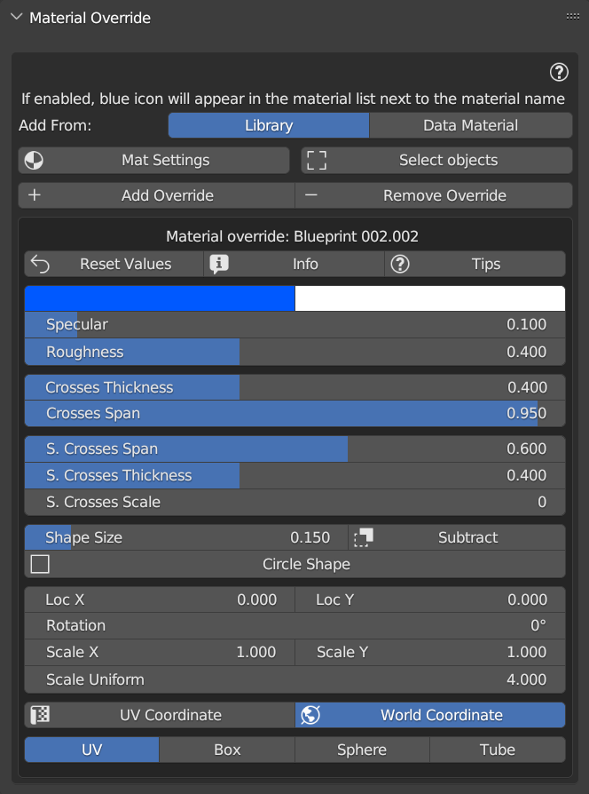{kind=link}
Note
On all materials contained in the Material List Section to which you will apply the Material Override, a small Green icon will be shown which indicates that the Material Override has been applied to that material.
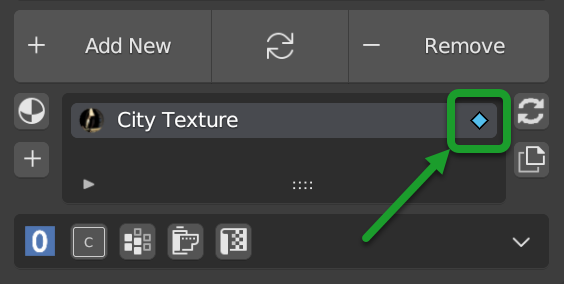{kind=link}
Tip
You can select multiple objects at the same time, if these objects have more than one material, Material Override will find all the materials contained in it, and will replace them with the selected material. This is useful for you want to apply a single material even procedural to all selected objects.
Example of use
In the following images we see an example of a Material Override applied to all objects in the scene
Basic scene, without material override:
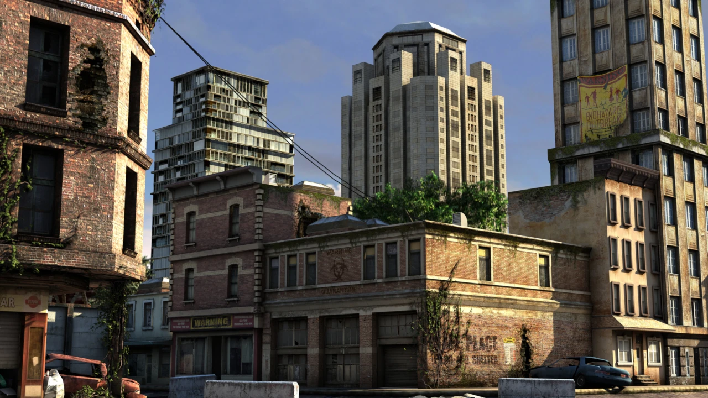{kind=link}
Scene with material override (Blueprint 002):

Scene with material override (Wood Plain 011):
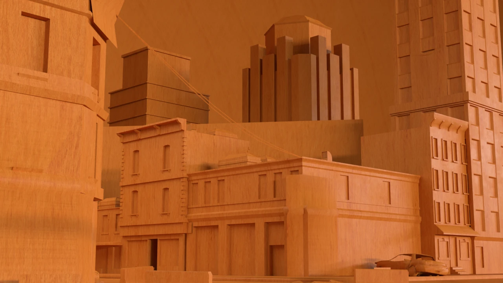{kind=link}
Credits CC-BY
Model: Apocalyptic City Author: ruslans3d from Sketchfab: Link
Tip
Any material in the Extreme PBR library or in the Project, or imported with Shader Maker, can be used as Material Override.
Note
You can hide this panel if you want, but make sure you don’t do it while you’ve already applied materials as Material Override, otherwise you won’t be able to access the material settings from the panel. Hide Material Override Panel
Material Override Tools
In this section we will see the main tools of the Material Override panel
Add From (Library)
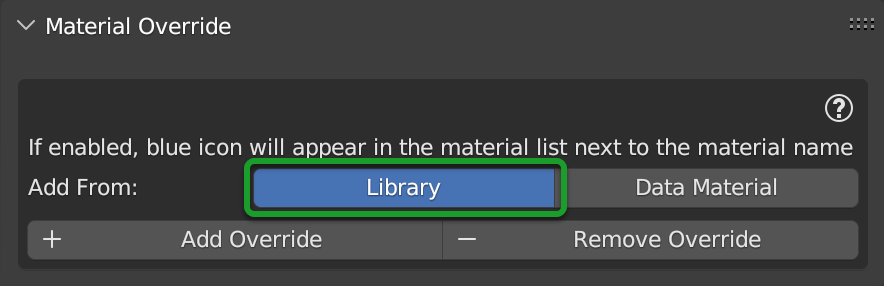{kind=link}
In this situation, no Material Override has been applied. Add From is used to choose where you want to take the material to apply as a Material Override.
Add From Library allows you to add the Material Override directly from the Extreme PBR library, just select the material you want to apply, from the Extreme PBR library then from the Material Browser , and press the button Add, explained later here: Add Override
Add From (Data Material)
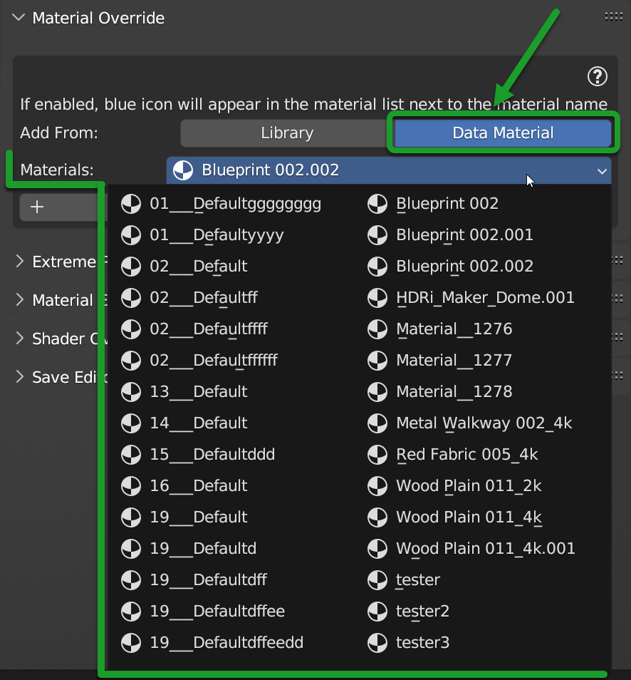{kind=link}
By selecting Add From Data Material you will have the list of materials present in the current Blender project and you can choose the material you want to apply as Material Override from that list. Once you have selected the material you want to apply, press the Add button, explained later here: Add Override
Add Override
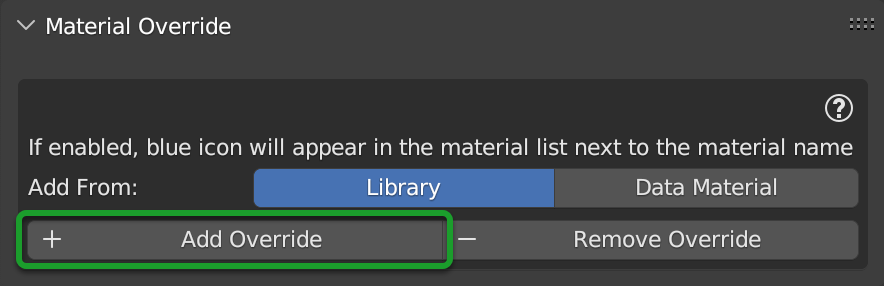{kind=link}
The Add button adds to the selected objects the Material Override that you have chosen from the Add From menu. If the Material Override is already present on the selected objects, the Add button replace the previous Material Override with the new one.
Important
This button adds to all the materials of the selected objects the material chosen as Material Override so if you have selected 10 objects and each of these has 3 materials, the material chosen as Material Override will be added to all 30 materials.
Remove Override
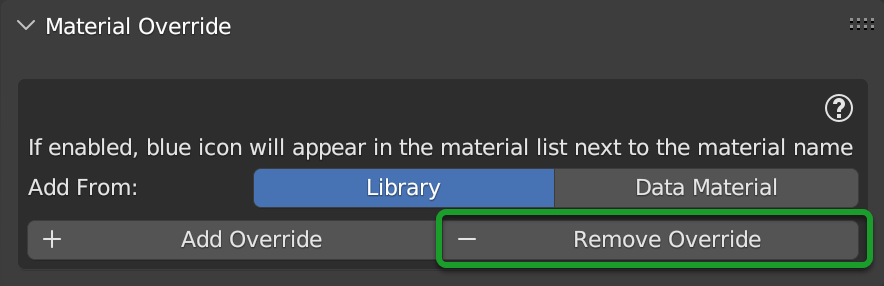{kind=link}
The Remove button removes the Material Override from the selected objects.
Important
This button removes the Material Override from all the materials of the selected objects, so if you have selected 10 objects and each of these has 3 materials, the Material Override will be removed from all 30 materials.
{kind=link}
Material Settings Panel
The Material Settings Panel is visible once the button previously described is pressed.
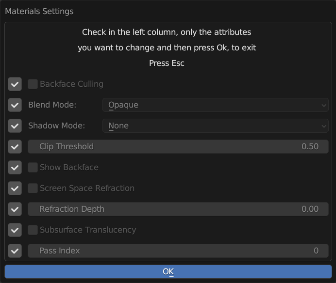{kind=link}
It allows you to set the material settings on all the materials to which the Material Override has been applied, in so that all materials that contain the Material Override will have the same settings.
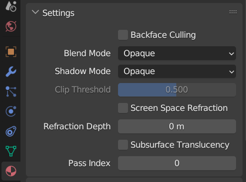{kind=link}
Note
In the image above there is an example of what the settings in the Material Settings panel modify to the materials that contain the Material Override. Once the Material Override has been removed, the settings of the materials return to those you were working with.
Here is the explanation of the properties contained in the Material Settings Panel:
Backface Culling: If active Hide the back faces of the mesh.
Blend Mode: Set the Blend Mode of the material. Blend methods described here Transparent Mode
Shadow Mode: Set the Shadow Mode of the material. Shadow methods described here Transparent Mode
Clip Threshold: A pixels is rendered only if its alpha value is above this threshold.
Show Backface: Show the back faces of the mesh.
Screen Space Reflections: Enable Screen Space Reflections.
Refraction Depth: Set the depth of the refraction.
Subsurface Translucent: Enable Subsurface Translucent.
Pass Index: Set the Pass Index of the material.
Important
Press OK button in order to apply the changes to the materials
Select Objects
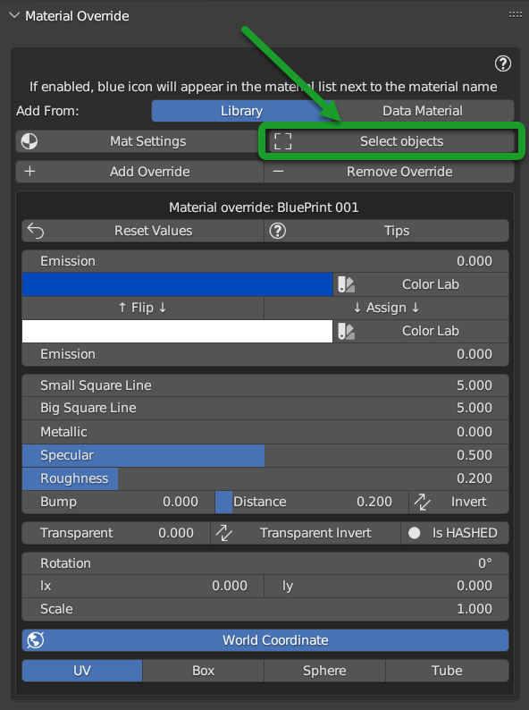{kind=link}
Select Objects allows you to select the objects in the scene that have the Material Override applied, so if you have applied the Material Override to 10 objects, by pressing this button you will select all 10 objects with that specific Material Override.
Projection Settings
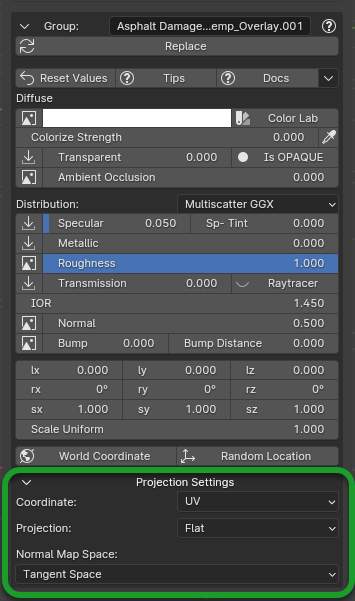{kind=link}
Important
Not all materials will support this feature. Texture-based materials fully support this feature
See also
Refer here for an explanation of the Projection Settings: Projection Settings